Corps pur :
Système constitué d’une seule espèce chimique.
Exemples : la glace, le fer, le sel sont des corps purs ; l’air, l’eau salée
n’en sont pas.
Phase :
Partie d’un système pour laquelle les paramètres intensifs ont la même valeur en tout point.
Une phase est donc homogène. Un corps pur peut se présenter sous plusieurs phases,
lesquelles peuvent, dans certaines conditions, coexister. On distingue couramment trois
phases.
La phase solide se caractérise à l’échelle microscopique par une structure ordonnée
et périodique. C’est le solide cristallin. Il peut exister différentes phases solides
chacune correspondant à une certaine symétrie cristalline.
La phase liquide est un état fluide particulier, caractérisé par un chaos moléculaire
et une densité comparable à celle des solides. Les interactions moléculaires jouent alors un
rôle clé au sein d’un liquide.
La phase gazeuse correspond à un fluide peu dense, dans lequel les molécules restent
suffisamment éloignées pour que l’énergie d’interaction moléculaire soit faible devant
l’énergie cinétique des molécules. Dans le cas limite où les interactions sont négligeables,
on parle de gaz parfait.
Exemples :
L’air est un mélange de gaz qui forme une phase car tous les gaz sont miscibles entre
eux.
Un mélange eau-éthanol forme une phase car ces deux liquides sont miscibles.
Un mélange eau/huile est constitué de deux phases. En effet, la densité volumique subit une
discontinuité au niveau de l’interface huile/eau. Il s’agit de deux phases liquides de deux
corps purs différents.
Le graphite et le diamant sont deux phases solides différentes d’un même corps pur (le
carbone). On parle de variétés allotropiques.
Transition de phase :
Passage d’une phase à une autre par modification continue d’un paramètre intensif extérieur
(pression, température, champ électrique, etc.). On distingue deux types de
transitions.
Les transitions du premier ordre s’accompagnent d’une absorption ou d’un dégagement de
chaleur et qui autorisent les phases à coexister en des proportions variables.
Les transitions du second ordre, quant à elles ne produisent aucun dégagement de chaleur, et
n’autorisent pas les deux phases à coexister. Les transitions conducteur normal /
supraconducteur ou paramagnétique / ferromagnétique sont des transitions du second ordre.
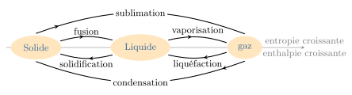
Les différentes transitions du corps pur. Notez que la transition entre deux
variétés allotropiques n’a pas de nom.
Les changements d’état du corps pur sont des transitions de phase du 1er ordre,
et nous verrons qu’elles s’accompagnent d’une variation d’enthalpie ainsi que d’une
variation d’entropie. On donne des noms spécifiques à ces transitions suivant la nature des
phases initiale et finale.
Diagramme de phases :
Il s’agit d’un diagramme qui représente les domaines de stabilité des différentes phases en
fonction des conditions extérieures (pression, température, volume massique, concentration,
etc.).
Sur un tel diagramme, les frontières des différents domaines donnent les conditions de
coexistence des différentes phases de part et d’autre de la frontière.
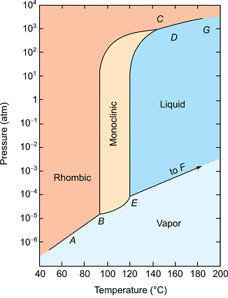
Diagramme d’état du soufre. Le solide existe sous deux variétés
allotropiques.
Équilibre liquide-vapeur
Expérience d’Andrews
Enfermons 1 g de gaz dans une ampoule thermalisée à la température \(T\). On peut
faire varier le volume du gaz grâce à une colonne de mercure que l’on pousse à l’aide d’un
piston. Un manomètre mesure à chaque instant la pression \(p\) du gaz.
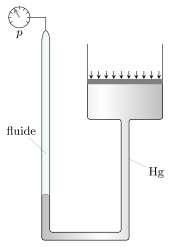
Dispositif de l’expérience d’Andrews.
Traçons l’évolution de la pression au fur et à mesure que le volume décroît. On obtient une
isotherme, dite isotherme d’Andrews.
Suivant la température, deux cas sont à distinguer :
Si \(T \lt T_c\) (température critique), la pression augmente jusqu’à un pallier
durant lequel deux phases coexistent : la vapeur et le liquide. La compression
s’accompagne d’un enrichissement en liquide. Lorsque tout a été liquéfié, une diminution
de volume entraîne une augmentation brutale de la pression.
Si \(T \gt T_c\), la pression augmente continûment sans apparition de palier ni de
transition : c’est la phase hypercritique.
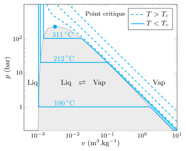
Isothermes d’Andrews de l’eau en échelle logarithmique.
Analyse
Détaillons et interprétons les observations. Au début, le fluide se présente sous une phase
gazeuse. On parle de vapeur sèche. Dans ce cas, la variance vaut \(\mathcal{V} = c + 2
- \varphi = 2\). Choisissons comme variables intensives indépendantes, la température \(T\)
et le volume massique \(v\). On peut donc écrire :
$$
\quad p = p(T,v)
$$
Par conséquent, le long d’une isotherme, la pression ne dépend que du volume massique.
D’ailleurs, si la vapeur sèche se comporte comme un gaz parfait, on prévoit des isothermes
hyperboliques, car :
$$
\quad p = \frac{nRT}{V} = \frac{RT}{Mv} = \frac{\rm{C^{te}}}{v}
$$
À partir d’un certain volume massique, apparaît une première goutte liquide. Au fur et à
mesure que l’on appuie sur le piston, le volume diminue car une partie du gaz passe dans la
phase liquide occupant moins de place. Ce système où coexistent les deux phases liquide et
vapeur, est appelé vapeur saturante. D’après la règle de Gibbs, \(\mathcal{V}=1\) ce
qui signifie que \(p=p(T)\) : l’isotherme est donc un pallier. Cette pression est
appelée pression de vapeur saturante et sera notée \(p_\text{sat}\).
Enfin, lorsque tout a été liquéfié, on se retrouve avec un système monophasé et donc
divariant (\(\mathcal{V}=2\)). La pression varie avec \(v\) et \(T\). Mais comme le liquide
est quasi incompressible, l’isotherme est quasi verticale pour la phase liquide.
La courbe correspondant à l’ensemble des points où apparaît la première goutte liquide est
appelée courbe de rosée, alors que la courbe où disparaît la dernière bulle de vapeur
est appelée courbe d’ébullition. Expérimentalement, on constate que ces deux courbes
se rejoignent en un point particulier dit point critique de coordonnées
\((v_c,p_c)\). Il existe une seule isotherme \(T=T_c\) qui passe par ce point, de sorte que
toutes les isothermes \(T \gt T_c\) ne présentent pas de pallier et donc pas de transition.
Le système reste constamment dans une seule phase, appelée fluide hypercritique.
Les coordonnées \((T_c,p_c,v_c)\) du point critique ne dépendent que de la nature du corps
pur.
Diagramme \(p-T\)
Dans un diagramme pression-température, la courbe \(p_\text{sat}(T)\), délimite deux
domaines :
$$
\quad \begin{cases}
p \gt p_\text{sat} \quad \text{domaine de stabilité du liquide} \\
p \lt p_\text{sat} \quad \text{domaine de stabilité du gaz}
\end{cases}
$$
La frontière entre ces deux domaines correspond à l’équilibre liquide-vapeur et décrit une
courbe croissante appelée courbe de vaporisation.
Elle est limitée par deux points :
le point critique C
le point triple Y (voir plus loin)
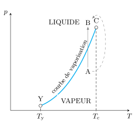
Courbe de vaporisation dans le diagramme \(p-T\).
De ce fait, il est possible de passer continûment de l’état gazeux à l’état liquide sans
rencontrer de transition en passant au delà du point critique.
La pression de vapeur saturante croît avec la température. On utilise souvent la loi
empirique de Rankine :
$$
\quad \ln p_\text{sat} = \alpha - \frac{\beta}{T}
$$
où \(\alpha\) et \(\beta\) sont deux constantes empiriques qui dépendent de la nature du
corps pur, et que l’on obtient facilement par régression linéaire après avoir tracé
\(\ln( p_\text{sat})\) en fonction de \(1/T\).
Pour l’eau, Duperray a proposé une formule relativement simple valable entre 100 °C
et 200 °C :
$$
\quad p_\text{sat} = \left( \frac{T}{100} \right)^4
$$
avec \(p_\text{sat}\) en \(\rm{atm}\) et \(T\) en \(\rm{°C}\).
On retiendra notamment que \(p_\text{sat} = 1\,\rm{atm}\) à \(T=100\,\rm{°C}\).
Diagramme complet
Si nous partons d’un point dans le domaine de stabilité de l’état liquide et que nous le
refroidissons de manière isobare, nous observons, à partir d’une certaine température,
l’apparition d’un germe solide : c’est le début de la solidification pendant laquelle
la température reste constante. Cette température est dite température de solidification et
ne dépend que de la pression puisque la variance vaut 1. En répétant l’opération pour
différentes pressions, on peut tracer la courbe d’équilibre liquide-solide
\(p_{(s)\leftrightharpoons(l)} = g(T)\) : c’est la courbe de fusion. Cette courbe est
quasi verticale et présente en générale une pente positive. Dans ce cas, une augmentation de
la pression d’un corps à l’état solide le stabilise, car le point représentatif de l’état du
corps s’éloigne de la courbe de coexistence liquide/solide. À ce titre, l’eau fait figure
d’exception puisqu’une augmentation de pression peut entraîner la fusion de la glace du fait
de la pente négative de la courbe de fusion dans le diagramme de l’eau.
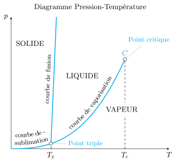
Diagramme pression-température complet pour un corps pur ne présentant qu’une
seule structure cristalline et dont la phase solide est plus dense que la phase liquide
(cas courant).
La courbe de fusion coupe la courbe de vaporisation au point triple Y. En ce point triple,
les trois phases (liquide, vapeur et solide) coexistent et sont en équilibre thermodynamique
de sorte que la variance vaut :
$$
\quad \mathcal{V} = c+ 2 - \varphi = 1 + 2 - 3 = 0
$$
Autrement dit, ce point ne dépend d’aucune variable. Il s’agit d’un point fixe
caractéristique du corps pur.
À partir du point triple il faut considérer l’équilibre entre le gaz et le solide. Il existe
alors une frontière \(p_{(s)\leftrightharpoons(g)} = h(T)\), dite courbe de
sublimation qui sépare les deux domaines solide et gaz.
Les diagrammes \(p-T\) et \(p-V\) sont en réalité des projections d’une surface d’état
tridimensionnelle. En effet, chaque phase est décrite par une équation d’état \(f(p,V,T)=0\)
ce qui se traduit par une surface dans l’espace \(p\), \(V\), \(T\).
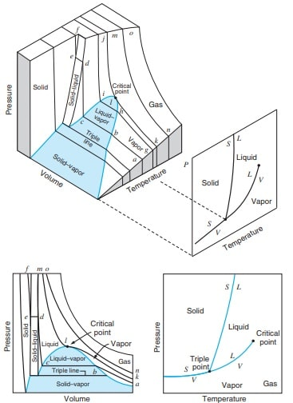
Surface d’état et ses différentes projections.
Règle des moments
Considérons un système diphasé, liquide/vapeur par exemple, en équilibre thermodynamique.
Notons \(m_\ell\) la masse de la phase liquide, et \(m_g\) la masse de vapeur. Appelons
\(x_g\) le titre massique de la vapeur, \(x_\ell\) celui de la phase liquide. Par
définition,
$$
\quad x_g = \frac{m_g}{m_g + m_\ell}
$$
et
$$
\quad x_g + x_\ell = 1
$$
Appelons \(v_M\) le volume massique du mélange. Celui-ci occupe donc un volume \(V_M =
(m_\ell + m_g)v_M\). De même,
la phase liquide occupe le volume \(V_\ell = m_\ell v_\ell\), où \(v_\ell\) est le
volume massique de la phase liquide
la vapeur occupe le volume \(V_g = m_g v_g\), \(v_g\) est le volume massique de la
phase vapeur
Vu que ces deux phases sont disjointes, les volumes s’ajoutent :
$$
\quad V_M = (m_\ell + m_g)v_M = m_\ell v_\ell + m_g v_g
$$
En divisant par \((m_\ell + m_g)\), on obtient la loi :
$$
\quad \boxed{ x_g = \frac{v_M - v_\ell}{v_g - v_\ell} = \frac{AM}{AB} }
$$
La relation précédente s’interprète comme un rapport de deux longueurs dans le diagramme
\(p-V\). En effet, si l’on note \(M\) le point représentatif du mélange, \(A\) celui du
liquide saturant et \(B\) celui de la vapeur saturante, alors \(AM/BM\) donne le titre
massique en vapeur : c’est la règle des moments.
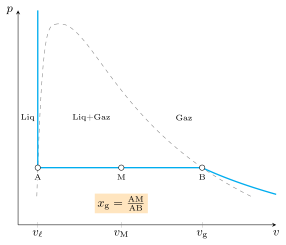
Détermination du titre en vapeur dans un diagramme de Clapeyron.
De manière générale, pour deux phases (1) et (2) en équilibre, on a :
$$
\quad x_1 = \frac{v_M - v_2}{v_1 - v_2}
$$
avec \(v\) les volumes massiques.
Exemple : contenu d’une bouteille de butane
Une bouteille de gaz de volume \(V = 30{,}6\,\rm{L}\) enferme \(m=10\,\rm{kg}\) de butane
(\(\rm{C_4H_{10}}\)) partiellement liquéfié. On a les données suivantes :
\(M(\rm{H}) = 1{,}0\,\rm{g.mol^{-1}}\) et \(M(\rm{C}) = 12\,\rm{g.mol^{-1}}\)
masse volumique du butane liquide à 25 °C : \(\rho =
573\,\rm{kg.m^{-3}}\)
pression de vapeur saturante du butane à 25 °C : \(p_\text{sat} =
2{,}4\,\rm{bar}\)
volume massique de la vapeur saturante à 25 °C : \(v_g =
162\,\rm{L.kg^{-1}}\)
Cherchons quelle est la proportion de liquide dans ce mélange à \( T = 25\,\rm{°C}\). Pour
cela, calculons les volumes massiques des phases liquide et vapeur à la température \(T\) et
à la pression de vapeur saturante correspondante.
Pour la phase liquide, on a \(v_\ell = \frac{1}{\rho} = 1{,}75.10^{-3}\,\rm{m^3.kg^{-1}} =
1{,}75\,\rm{L.kg^{-1}}\).
Pour la phase gazeuse, on trouve dans les données \(v_g = 162\,\rm{L.kg^{-1}}\).
Calculons maintenant le volume massique du mélange liquide :
$$
\quad v_m = \frac{V}{m} = 3{,}06\,\rm{L.kg^{-1}}
$$
On constate que \(v_m \in [v_\ell;v_g]\) ce qui prouve que les phases vapeur et liquide
coexistent. Utilisons la règle des moments pour déterminer la fraction massique \(x\) en
liquide :
$$
\quad v_m = x v_\ell + (1 - x)v_g
$$
soit
$$
\quad x = \frac{v_m - v_g}{v_\ell - v_g} = 99{,}2\,\%
$$
Autrement-dit, sur les 10 kg de butane, 9,92 kg sont à l’état liquide, ce qui
représente un volume \(V_\ell = 9{,}92/573 = 17{,}3.10^{-3}\,\rm{m^3} = 17{,}3\,\rm{L}\).
Ainsi, le liquide occupe 56,6 % du volume disponible.
Aspects énergétiques
Chaleur latente
Expérience
Plaçons de la glace dans un calorimètre à la pression atmosphérique, puis apportons de
l’énergie thermique (par effet Joule par exemple). Traçons l’évolution de la température en
fonction de l’énergie apportée. On observe un palier à la température de fusion durant
laquelle le mélange s’enrichit en liquide : c’est la fusion.
La quantité d’énergie thermique qu’il a fallu fournir pour transformer intégralement la
glace en eau liquide à la température de fusion est appelée chaleur latente de
fusion. Si l’on procède à rebours, alors le système cède la même quantité d’énergie durant
la solidification.
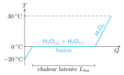
Évolution du profil de la température au cours de l’expérience.
Définition
La chaleur latente \(L_{1 \to 2}\) de changement d’état est le transfert thermique qu’il
faut fournir pour effectuer un changement de phase \((1) \to (2)\), ceci à température
constante et à la pression d’équilibre. Il s’agit donc d’une variation d’enthalpie :
$$
\quad L_{1 \to 2}(T) = H_2(T,p_\text{eq}(T)) - H_1(T,p_\text{eq}(T)) \quad[\rm{J}]
$$
Les tables fournissent généralement les chaleurs latentes massiques ou molaires. La chaleur
latente massique ne dépend que de la température puisque la pression de l’équilibre
\((1) \leftrightharpoons (2)\) est fixée par la température.
Pour le corps pur, les chaleurs latentes de fusion, de vaporisation et de sublimation sont
toutes positives : ces transformations puisent de l’énergie à l’extérieur. C’est par
exemple ce qui explique pourquoi une bouteille de gaz en fonctionnement peu se recouvrir de
givre. En effet, dans la bouteille de gaz en fonctionnement une partie du liquide se
vaporise ce qui puisent de l’énergie thermique à la bouteille, provoquant ainsi son
refroidissement. Si l’air extérieur est humide, du givre peut se former sur la bouteille.
Les chaleurs latentes de solidification, de liquéfaction et de condensation, quant à elles
correspondent aux valeurs opposées. Autrement dit, la solidification, la liquéfaction ainsi
que la condensation s’accompagnent d’un dégagement de chaleur.
Mesures de chaleur latente
Chaleur latente de fusion
On peut déterminer la chaleur latente de fusion par calorimétrie. Prenons l’exemple de l’eau
pour fixer les idées. Le protocole consiste à mettre une masse \(m_\ell\) de liquide dans un
calorimètre. On attend que la température s’équilibre à une valeur \(T_1\) que l’on mesure.
On ajoute ensuite une masse \(m_s\) de glace de température \(T_2 \lt T_\text{fus}\). On
mélange et on attend l’équilibre thermique. On se sera arrangé pour que les masses choisies
permettent à la glace de fondre complètement. À la fin, on obtient de l’eau liquide à une
température \(T_\text{eq} \gt T_\text{fus}\). La mesure des températures et des masses
permet de déduire la chaleur latente si l’on connait les capacités thermiques.
Dans un premier temps, pour simplifier, imaginons le calorimètre parfait, c’est-à-dire
adiabatique et de capacité thermique négligeable. Étudions la transformation du système
formé par le calorimètre et son contenu. La transformation est monobare et adiabatique,
d’où :
$$
\quad Q_p = 0 = \Delta H
$$
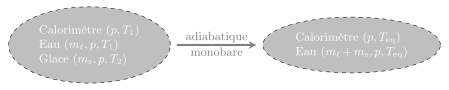
Transformation du calorimètre et son contenu.
L’enthalpie étant une grandeur additive on a également :
$$
\quad \Delta H = \Delta H_\text{calorimètre} + \Delta H_\text{liquide}
+ \Delta H_\text{solide}
$$
avec \(\Delta H_\text{calorimètre} = 0\) puisque le calorimètre est de capacité
négligeable.
Le liquide se refroidit de \(T_1\) à \(T_\text{eq}\) de sorte que \(\Delta H_\text{liquide}
= m_\ell c_{p,\ell}(T_\text{eq} - T_1)\).
Quant à la glace, on peut toujours imaginer un chemin réversible qui amène la glace à la
température de fusion, la fait fondre puis la réchauffe jusqu’à \(T_\text{eq}\). Ainsi,
\(\Delta H_\text{solide} = m_s c_{p,s}(T_\text{fus} - T_2 ) + m_s \ell_\text{fus} +
m_s c_{p,\ell} (T_\text{eq} - T_\text{fus}) \).
Finalement, le bilan d’énergie donne :
$$
\quad \ell_\text{fus} = c_{p,\ell} \left[
(T_\text{fus}-T_\text{eq}) + \frac{m_\ell}{m_s} (T_1 - T_\text{eq})
\right]
+ c_{p,s}(T_2 - T_\text{fus})
$$
Si le calorimètre présente une capacité thermique \(C\), il faut ajouter le terme
\(\frac{C}{m_s}(T_1 - T_\text{eq})\).
Chaleur latente de vaporisation
On utilise le dispositif de la figure suivante, dans lequel on vaporise le liquide en
apportant de l’énergie thermique par effet Joule, et on recueille cette vapeur dans un
bécher après l’avoir refroidie grâce à un réfrigérant.
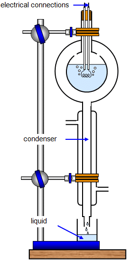
Dispositif pour mesurer la chaleur latente de vaporisation.
Choisissons comme système l’ensemble formé par le ballon, le liquide et la résistance
électrique alimentée en alternatif. Ce système subit une transformation monobare.
En régime permanent, l’énergie électrique sert essentiellement à vaporiser le liquide.
Faisons un bilan d’énergie entre les instants \(t\) et \(t + \tau\) durant lesquels une
masse \(m\) s’est vaporisée :
$$
\quad \Delta H = W_\text{elec} + Q = \Delta H_\text{ballon} + \Delta H_\text{résistance}
+ \Delta H_\text{liq}
$$
avec :
le travail électrique fourni \( W_\text{elec} = R{I_\text{eff}}^2 \tau\) que l’on peut
facilement mesurer
les pertes thermiques représentées par \(Q\) (\(Q \lt 0\))
\(\Delta H_\text{ballon} = \Delta H_\text{résistance} = 0\) puisque le ballon et la
résistance restent à la même température une fois le régime permanent établi
\(\Delta H_\text{liq} = m \ell_\text{vap}\)
On aboutit à la relation :
$$
\quad R{I_\text{eff}}^2 \tau + Q = m \ell_\text{vap}
$$
Cette équation présente deux inconnues : la chaleur latente \(\ell_\text{vap}\) et
les pertes thermiques \(Q\). On réalise alors deux expériences avec des valeurs différentes
d’intensité électrique, mais en fixant la même durée \(\tau\). Si l’on admet que le terme
\(Q\) ne change pas, on trouve deux équations à deux inconnues dont la résolution permet de
déterminer \(Q\) et \(\ell_\text{vap}\).
Entropie de changement d’état
Le changement de phase s’accompagne d’un saut d’entropie que l’on peut relier à la chaleur
latente. En effet, considérons un processus réversible isobare qui effectue une transition
de phase à la température \(T\) et à la pression \(p_\text{eq}(T)\). Le second principe
donne :
$$
\quad \Delta S_{1 \to 2} = S_2(T,p_\text{eq}(T)) - S_1(T,p_\text{eq}(T))
= \int_{T=\rm{C^{te}}} \frac{\delta Q_p}{T} = \frac{Q_p}{T}
$$
On en déduit, la relation :
$$
\quad \boxed{ \Delta S_{1 \to 2} = \frac{L_{1 \to 2}(T)}{T} }
$$
Cette relation implique que le signe de la chaleur latente est liée à celle de l’entropie de
changement d’état. Si l’entropie augmente alors la chaleur latente est positive. Ainsi, un
changement d’état vers une phase plus désordonnée absorbe de la chaleur.
Diagramme des frigoristes
Nous avons rencontrés jusqu’ici différents diagrammes : le diagramme de Clapeyron
(\(p-v\)), le diagramme d’Amagat (\(pV−p\)) et le diagramme \(p−T\). Le diagramme des
frigoristes est un diagramme d’état où \(\ln(p)\) est en ordonnée et l’enthalpie massique
\(h\) en abscisse. Ce diagramme est très utilisé dans l’étude des machines frigorifiques,
d’où son nom.
Par exemple, la figure suivante représente le diagramme des frigoristes pour l’eau. Le
domaine limité par un trait discontinu correspond à l’équilibre liquide/vapeur. À gauche, on
trouve le domaine de stabilité du liquide, et à droite celui du gaz.
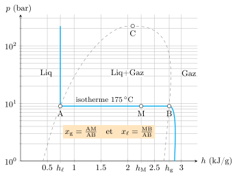
Diagramme des frigoristes de l’eau. Notons l’axe logarithmique
vertical.
Sur ce diagramme, l’isotherme \(T=175\,\rm{°C}\) est tracée. Le pallier AB correspond au
domaine de coexistence des deux phases liquide et vapeur. Sa position verticale nous
renseigne sur la pression de vapeur saturante (ici \(p_\text{sat} = 9\,\rm{bar}\)). Sa
largeur nous renseigne sur la chaleur latente puisque :
$$
\quad AB = h_g - h_\ell = \ell_\text{vap}(T)
$$
On voit notamment que la chaleur latente diminue au fur et à mesure que l’on s’approche du
point critique jusqu’a s’annuler au point critique.
L’enthalpie des phases condensées dépend faiblement de la pression de sorte qu’en première
approximation \(h \approx h(T)\) pour le liquide pur. C’est pourquoi la branche isotherme de
gauche est quasi-verticale. De même, si l’on se place à faible pression et loin du point
critique, le gaz est bien décrit par le modèle du gaz parfait. Dans ce cas, en vertu de la
seconde loi de Joule, l’enthalpie ne dépend que de la température et l’isotherme est alors
également verticale.
Dans le cas d’un mélange liquide/vapeur, si l’on connaît la position du système dans le
diagramme, alors on peut en déduire la composition du mélange à l’aide de la règle des
moments que l’on a déjà rencontrée. En effet, de part l’additivité de l’enthalpie on peut
écrire :
$$
\quad H_M = H_\ell + H_g
$$
soit :
$$
\quad (m_\ell + m_g)h_M = m_\ell h_\ell + m_g h_g
$$
En divisant par la masse totale \((m_\ell + m_g)\) et en utilisant \(x_\ell = 1 + x_g\), on
obtient :
$$
\quad h_M = x_g h_g + (1- x_g) h_l
$$
Et si l’on fait intervenir les distances AM et AB, on trouve :
$$
\quad x_g = \frac{h_M - h_g}{h_\ell - h_g} = \frac{AM}{AB}
$$
Quelques applications
Évaporation
L’évaporation est un lent processus de vaporisation dont on fait couramment l’expérience.
Par exemple, le séchage du linge à l’air libre ou la thermorégulation des humains utilisent
ce phénomène.
Imaginons de l’eau à 20 °C dans une enceinte initialement vide dont le volume est
supérieur au volume qu’occupe le liquide. En l’absence de pression extérieure, le liquide
est manifestement instable. Très rapidement, des molécules d’eau passent à l’état vapeur ce
qui augmente la pression extérieure. S’il y a suffisamment de liquide, le processus s’arrête
dès que la pression atteint la valeur de la pression de vapeur saturante, à savoir ici
\(p_\text{sat} = 23\,\rm{mbar}\).
Cet équilibre est en réalité le résultat de deux flux contraires qui se compensent.
En effet, les molécules de la phase liquide ont une probabilité non nulle de passer dans la
phase vapeur ce qui peut se résumer par le processus \(\rm{{H_2O}_{(\ell)}} \to
\rm{{H_2O}_{(g)}}\). Cette probabilité est d’autant plus élevée que la température est
élevée.
Les molécules de vapeur d’eau ont quant à elles la possibilité de migrer dans la phase
liquide du fait des incessantes collisions avec l’interface liquide/vapeur. La probabilité
de passer dans la phase liquide augmente ainsi avec la pression partielle en eau. C’est le
processus \(\rm{{H_2O}_{(g)}} \to \rm{{H_2O}_{(\ell)}}\).
À l’équilibre ces deux processus se compensent, ce qui explique pourquoi la pression
d’équilibre ne dépend que de la température.
Ouvrons maintenant l’enceinte de façon à mettre son contenu en contact avec de l’air sec à
la pression atmosphérique. L’air emporte la vapeur d’eau ce qui diminue fortement la
pression partielle en vapeur d’eau et brise l’équilibre. On déplace ainsi l’équilibre vers
la droite en éliminant constamment la vapeur d’eau.
Au fil du temps, la quantité de liquide diminue : c’est l’évaporation. Ce
déséquilibre ne concerne que les molécules d’eau situées à l’interface entre les deux phases
ce qui explique pourquoi l’évaporation est un phénomène lent. Quant aux molécules situées au
sein du liquide, vu qu’elles sont soumises à une pression liquide de 1 atm, elles
sont dans un état stable à 20 °C, comme l’indique le diagramme de la figure
ci-dessous.
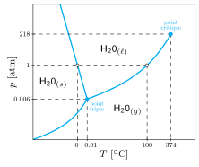
Diagramme de l’eau.
Cette évaporation s’accompagne d’une absorption de chaleur. Cette énergie thermique est
surtout prélevée au liquide qui se refroidit donc. C’est sur ce principe que repose la
régulation thermique des humains induit par la transpiration. Cette régulation thermique
sera d’autant plus efficace que l’air est sec. Dans une atmosphère humide, en revanche, le
processus d’évaporation est ralenti, voire bloqué si l’air est saturé (\(p_{\rm{H_2O}} =
p_\text{sat}\)). Cela explique pourquoi une atmosphère humide et chaude est particulièrement
difficile à supporter pour un être humain.
Ébullition
Contrairement à l’évaporation, l’ébullition est un processus de vaporisation qui se
développe en volume et de façon beaucoup plus rapide. De ce fait, les échanges thermiques
mises en jeu sont beaucoup plus importants.
Imaginons un récipient contenant de l’eau liquide, posé sur une surface chauffante. Un
gradient thermique s’installe alors entre le fond et la surface libre du liquide. Au sein du
liquide la pression vaut sensiblement \(p = 1\,\rm{atm}\) de sorte que les premières bulles
apparaissent au fond dès que \(p = p_\text{sat}(T_\text{fond})\), c’est-à-dire dès que
\( T_\text{fond} = 100\,\rm{°C}\).
Du fait de la poussée d’Archimède, ces bulles entament une ascension au cours de laquelle la
température décroît ce qui fait les fait disparaître. Pour qu’elles puissent atteindre la
surface, il faut qu’il y règne une température au moins égale à 100 °C. Dans ce cas,
la surface devient le siège de remous provoquée par l’éclatement des bulles : on dit
qu’il y a ébullition.
De manière générale, la température d’ébullition est définie par la relation :
$$
\quad p_\text{sat}(T_\text{eb}) = p_\text{atm}
$$
ce qui donne \(T_\text{eb} = 100\,\rm{°C}\) pour l’eau si \(p_\text{atm} = 1\,\rm{atm} =
1{,}013.10^5\,\rm{Pa}\). Puisque \(p_\text{sat}(T)\) est une fonction croissante de la
température, on comprend pourquoi la température d’ébullition diminue quand on monte en
altitude puisque la pression atmosphérique y est plus faible qu’au sol.
Stockage des fluides
Si l’on veut stocker un fluide qui se présente à l’état gazeux dans les conditions usuelles
de pression et de température, on a intérêt, pour limiter son encombrement, à le mettre dans
un état le plus condensé possible. Deux possibilités s’offrent à nous :
Réduire la température. Il s’agit de stocker le fluide à l’état liquide en diminuant
sa température (chemin E1→E2 sur la figure ci-dessous). On le conserve dans un conteneur
cryogénique aux parois adiabatiques qui présente une petite ouverture afin d’assurer une
pression constante (pour des raisons de sécurité). L’isolation thermique n’étant pas
parfaite, une partie du liquide s’évapore ce qui limite le temps de conservation. Cette
technique est courante pour l’azote et l’oxygène.
Augmenter la pression. On stocke le fluide sous haute pression et à température
ambiante dans une bouteille hermétique supportant les fortes pressions (chemin E1→E3 sur
la figure ci-dessous). Si la température ambiante est supérieure à la température
critique, le fuide se trouve dans l’état hypercritique. Sinon le fluide est sous la forme
d’un mélange liquide/gaz à la pression de vapeur saturante. Dans ce cas, on est tenté de
diminuer le volume massique pour stocker le maximum de fluide, mais il faut prendre garde
aux problèmes de sécurité. En effet, si le volume massique est inférieur au volume
critique \(v_c\), une élévation accidentelle de température de l’environnement peut
entrainer la liquéfaction complète du liquide et une augmentation considérable de la
pression, d’où le risque d’explosion. Alors que si \(v \gt v_c\), une augmentation
accidentelle de température entrainera la vaporisation complète et une moindre
augmentation de pression, le gaz étant compressible. Les bouteilles de butane et de
propane comme source de carburant domestique, ou les extincteurs à \(\rm{CO_2}\) utilisent
cette technique.
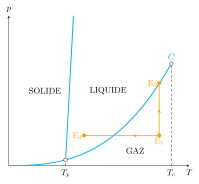
Différentes stratégies pour stocker un fluide a l’état gazeux dans les
conditions usuelles.
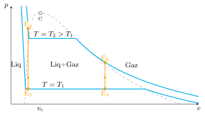
Effet d’une augmentation de température sur un mélange liquide-gaz selon que
\(v\) est supérieur ou inférieur à \(v_c\).